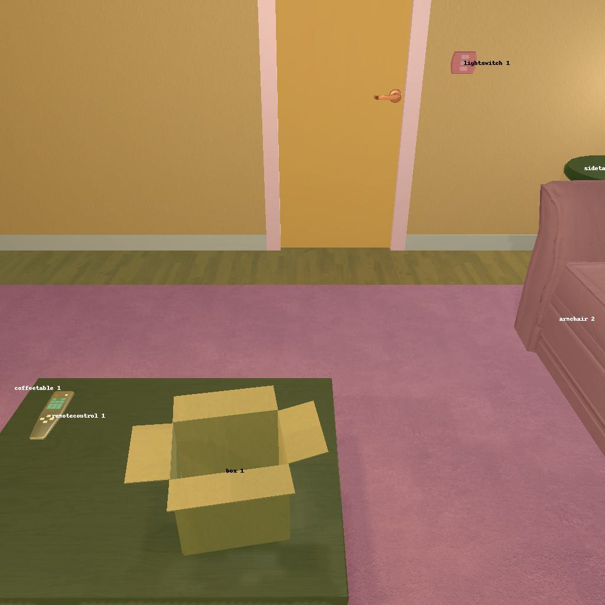

---------------------------------------------------------task: 7---------------------------------------------------------
--------------------------------------------------------------------------------------------------------------------------------------------------------------------
--------------------------------------------------------------------------------------------------------------------------------------------------------------------
Step:--------------------------------------------------------------------------2-------------------------------------------------------------------------------
----------------------------------------
VLM Prompt:
Image1:
**Instruction**
1. Analyze the provided image to identify all visible household objects, focusing on those relevant to the task description "put a creditcard in coffeetable."
2. Use the analysis of the image and the task hint "The agent must find an object of the desired type, pick it up, find the correct location to place it, and put it down there." to answer the question: what is the most reasonable action in the choices for the task description "put a creditcard in coffeetable"?
4. Decide and write the answer using the template: The answer is: (i): , where i is the real number. If there is no desired object in the image, search every place based on **Initial Observation** to find the object. And if no one is exactly correct, choose a similar answer.
**Initial Observation**
You are in the middle of a room. Looking quickly around you, you can see armchair (1-2), dresser (1), garbagecan (1), cabinet (1-4), drawer (1-4), coffeetable (1), sidetable (1), sofa (1)
**Answer Choices**
(1): go to armchair 1
(2): go to armchair 2
(3): go to dresser 1
(4): go to garbagecan 1
(5): go to cabinet 1
(6): go to drawer 2
(7): go to cabinet 2
(8): go to drawer 3
(9): go to cabinet 3
(10): go to drawer 4
(11): go to cabinet 4
(12): go to sidetable 1
(13): go to sofa 1
(14): take box 1 from coffeetable 1
(15): take remotecontrol 1 from coffeetable 1
(16): take lightswitch 1 from coffeetable 1
(17): examine coffeetable 1
**Answer**
Let's think step by step by following the instructions.
----------------------------------------
----------------------------------------
Original Response:
First, we need to identify all visible household objects relevant to the task. In the image, we can see a coffeetable labeled "coffeetable 1" with a box labeled "box 1" and a remote control labeled "remotecontrol 1" on it. There is no visible credit card.
Given the task hint, we need to find an object of the desired type, which is a credit card in this case. Since there is no credit card on the coffeetable, we must search other places based on the Initial Observation.
Looking at the answer choices, there is no direct action to pick up a credit card because it is not visible in the image. Therefore, we must search for the credit card in the locations mentioned in the Initial Observation.
Among the choices, drawers and cabinets are the most likely places where one might find a credit card. Hence, the most reasonable actions would be to check the drawers and cabinets.
The answer is: (6): go to drawer 2. If the credit card is not found in drawer 2, the next reasonable actions would be to check other drawers and cabinets in numerical order.
----------------------------------------
----------------------------------------
>>> Refine Original VLM Response and Get Pure Action: go to drawer 2
----------------------------------------
-----------------------------------------------------------------
Running time: 13.257883548736572 seconds
Total Money: 2.03093
-----------------------------------------------------------------
-----------------------------------------------------------------
Text Observation:You arrive at loc 6. The drawer 2 is closed.
-----------------------------------------------------------------
UNSUCCEED